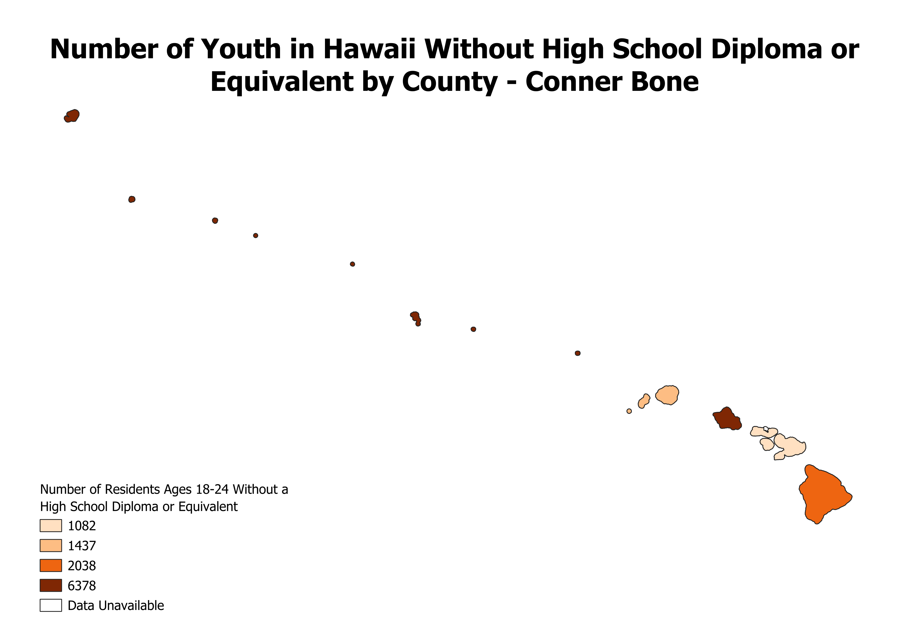

Homework 6
Hawaii Choropleth Map

This map shows the different numbers of residents ages 18-24 that have not obtained a high school diploma or educational
equivalent in each of Hawaii's five counties. Unsurprisingly, Hawaii's most populous county, Honolulu County, which spans the
island of Honolulu and the Northwestern Hawaiian Islands, has the largest number of youth without a high school diploma or
equivalent. But when it comes to a per capita basis, Kauai County has the most. Census data is unavailable for the smallest
county in the state both in terms of area and population, Kalawao County.
Data Used
Hawaii GeoJSON
Hawaii Education Data